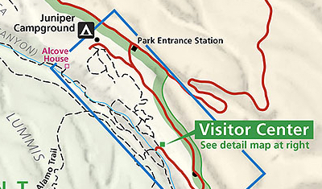
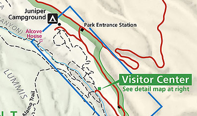

Hike New Mexico
w/ Tom & Ken
Alcove House Trail
| Difficulty | Round-trip | Type | Elev. Chg. | Exposure | Wow Factor | Facilities | Seasons | Get There |
|---|---|---|---|---|---|---|---|---|
| Moderate | 1 mile | Out-and-back | 140 ft | Full sun | Ruins & view | Visitor Center | All | Directions |


 

- Apr 29, 2016: The long climb up - did the Anasazi do this?
- Apr 29, 2016: Negotiating the access to the alcove
- Apr 29, 2016: Looking out from Alcove House
- Apr 29, 2016: Room with a view
- Apr 29, 2016: A fixer-upper
- https://www.flickr.com/photos/139088815@N08/27923008155/in/album-72157667002560044
- https://www.flickr.com/photos/139088815@N08/27345569480/in/album-72157667002560044
- https://www.flickr.com/photos/139088815@N08/27013735793/in/album-72157667002560044
- https://www.flickr.com/photos/139088815@N08/27523482012/in/album-72157667002560044
- https://www.flickr.com/photos/139088815@N08/27012820984/in/album-72157667002560044
The Alcove House Trail is an extension of the Main Loop Trail, starting from the visitor center. Part of the trail requires ascending ladders to reach the ruins. Formerly known as Ceremonial Cave, this alcove is located 140 feet above the floor of Frijoles Canyon. Once home to approximately 25 Ancestral Pueblo people, the elevated site is now reached by 4 wooden ladders and a number of stone stairs. In Alcove House, there is a reconstructed kiva and the viga holes and niches of former homes. Imagine climbing these ladders, carrying whatever supplies were needed, to this lofty home. National Park Service site on Alcove House provides some additional information and photos.